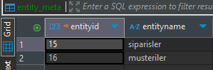
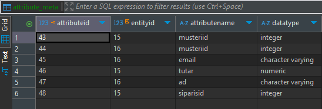
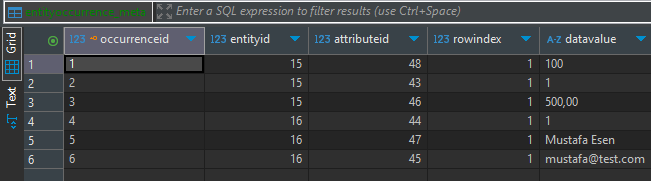

Hazırlayan: Mustafa Esen
Öğrenci Numarası: 91260000486
Tarih: 11 Ekim 2026
Kapsam: Veritabanı Sistemleri, Metamodel (M2) Tasarımı, Entity Occurrence, EAV Modeli
Bu çalışmanın temel amacı, PostgreSQL veritabanı yönetim sisteminde yer alan M0 (Veri) katmanındaki fiziksel ham kayıtların, M2 (Metamodel) katmanıyla entegre edilerek dinamik bir EAV (Entity-Attribute-Value) modeline dönüştürülmesidir. Geliştirilen C# (.NET Core) uygulaması, veritabanındaki standart tabloları tarayarak içlerindeki verileri okumakta ve entityOccurrence_meta tablosuna (Veri Sözlüğü Örneklemi) yapısal bir bütünlük içinde aktarmaktadır.
Fiziksel tablolardaki verilerin metamodele aktarılması süreci, yazılım mimarisi açısından yüksek performans ve dinamiklik gerektirmektedir. Bu aşamada uygulanan teknik adımlar şunlardır:
entity_meta ve attribute_meta tablolarına kaydeder. C# uygulamasında bu kayıtlar sırasında üretilen kimlikler (EntityId ve AttributeId) Dictionary (Sözlük) yapılarında RAM üzerinde önbelleğe (cache) alınır.Geleneksel ilişkisel veritabanlarında veriler yatay (horizontal) satırlar halinde tutulurken, EAV modelinde veriler dikey sütunlara dönüştürülerek depolanır. Bu dönüşüm sırasında, aynı fiziksel satıra ait olan hücrelerin birbirleriyle olan anlamsal bağlarının kopmaması büyük bir kritik öneme sahiptir.
Aynı kayda ait olan farklı niteliklerin (örneğin; bir müşterinin adı ve e-posta adresi) birbirleriyle olan bağını korumak için RowIndex mekanizması kullanılmıştır. Sistem, fiziksel bir tablonun satırını okurken bir sayaç (index) artırır ve o satırdan çıkan tüm hücre değerlerine aynı RowIndex damgasını vurur. Bu sayede veriler dikey olarak parçalanmış olsa bile, aynı RowIndex değerine sahip verilerin aslında M0 katmanında tek bir bütünü temsil ettiği anlaşılır.
entityOccurrence_meta tablosundaki verilerin anlamlandırılabilmesi için, içindeki EntityId ve AttributeId değerlerinin M1 (Model) katmanından çıkarılan ana metamodel tablolarıyla eşleştirilmesi gerekmektedir. Aşağıda bu ilişkisel bütünlüğü sağlayan tabloların çıktıları sırasıyla verilmiştir.



Şekil 3'te görüldüğü üzere, 16 numaralı EntityId'ye (Müşteriler) ait veriler ayrı satırlara bölünmüştür. İlgili AttributeId'ler (47=ad, 45=email vb.) Şekil 2'deki meta-verilerle eşleşerek, tabloda yer alan "Mustafa Esen" değerinin aslında bir müşteri adı olduğunu sistemin anlamasını sağlar. Hepsinde rowindex değerinin 1 olması, bu üç ayrı niteliğin de (id, ad, email) 1. sıradaki tek bir müşteriye ait olduğunu yapısal olarak güvence altına alır.
Bu çalışma sonucunda, ilişkisel veritabanı tablolarına hapsolmuş yatay verilerin (M0), dinamik bir şekilde analiz edilerek merkezi bir Metamodel (M2) yapısına entegre edilebileceği kanıtlanmıştır. Geliştirilen C# aracı; Entity, Attribute ve Occurrence üçlemesini EAV (Entity-Attribute-Value) mimarisiyle birbirine bağlayarak veritabanının içeriğini bir Veri Sözlüğü (Data Dictionary) formatına çevirmiştir. Bu yapısal dönüşüm, bilgi sistemlerinin yeni tablolara, yeni veri tiplerine ve sürekli değişen şemalara karşı tam esnek, sorgulanabilir ve otonom bir yapıya (Self-Documenting Database) kavuşmasını sağlamıştır.